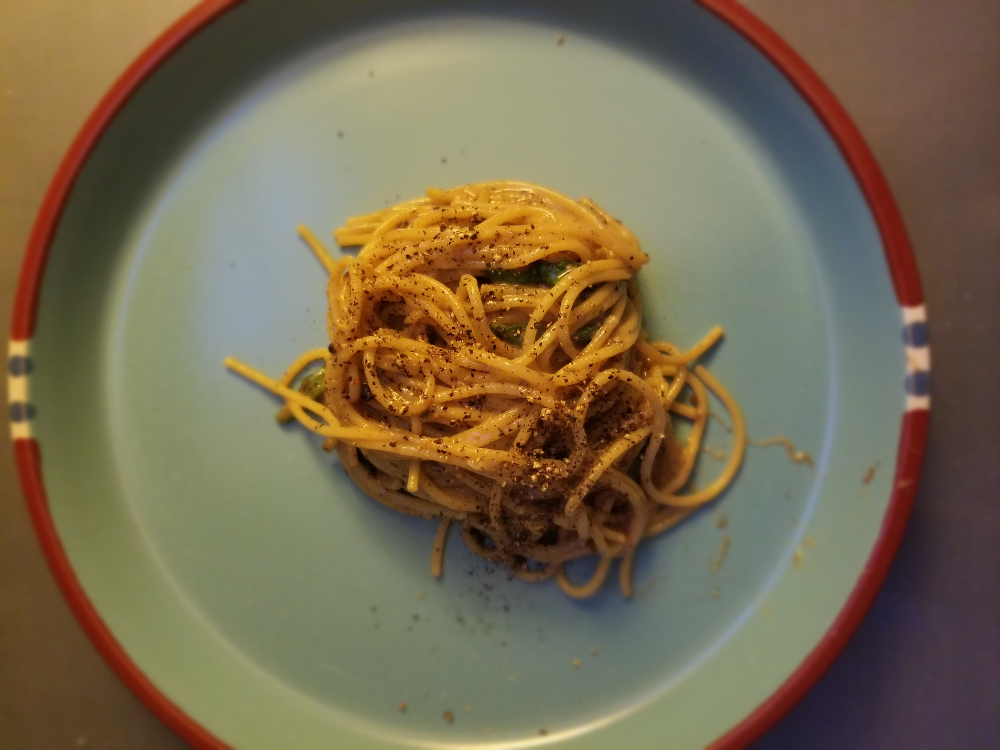

Cacio e Pepe Recipe

Description
Cacio e Pepe is one of the four classic Roman pasta dishes (Cacio e pepe, alla gricia, carbonara, and alla matriciana). Cacio e pepe translates to "cheese and pepper" and the ingredients are just that - Pecorino Romano cheese and pepper.
However, as you become more familiar with making cacio e pepe, feel free to experiment with spinach or other greens. This is a elegant and simple dish, which means it is very hard to get right.
I recommend reading through this method a few times before trying it yourself. This method I outline here will have you cooking restaurant quality cacio e pepe in no time!
Tools
- Empty pepper grinder or a mortar & pestle
- Medium sized mixing bowl
- A pot and pan
- tongs and a ladle
Ingredients
- ~1-cup freshly grated Pecorino Romano cheese
- Whole black peppercorns
- ~200g of pasta - linguine or any long pasta will work
Preparation
- Add whole peppercorns to a dry pan over medium heat. While the peppercorns are toasting, grate fresh Pecorino Romano and set aside in a bowl.
When peppercorns are fragrant, take off the heat and either add to an empty pepper grinder or a mortar & pestle will work.
- Put water on to boil. Use less water than you think - we want the pasta water to be very starchy. Salt the water
- While water is coming to a boil, grind peppercorns into a dry pan with no heat.
- When the water reaches a boil, add your pasta. Cook for ~3-4 minutes until you can see the pasta water getting starchy.
- After 3-4 minutes, scoop about a half-ladle of pasta water. Let it cool in the ladle for about 30 seconds then add to the grated cheese. Stir until a paste forms. You may want to keep some extra cheese on hand incase the paste is too watery.
- Put the cracked pepper on high heat. Add a ladle of pasta water once the pan is hot (you should see the water sizzle). Keep adding water to reduce the peppercorns.
- Once the pasta is almost al dente, remove it from the pot with tongs and add to the pan with peppercorns. Stir vigorously to mix in the peppercorn mixure. Add more pasta water as needed.
- By now you should start to see a strarchy-peppery base form. Be sure to add more water when needed to not let the mixure dry out. Breifly remove the pan from the heat and add your cheese paste. Stir vigorously and add more pasta water. This is the time to add any leafly greens you want.
- Let the pasta water cook off and add more if needed. You are looking to make a creamy sauce that clings to the noodles.
- plate immediately and enjoy!